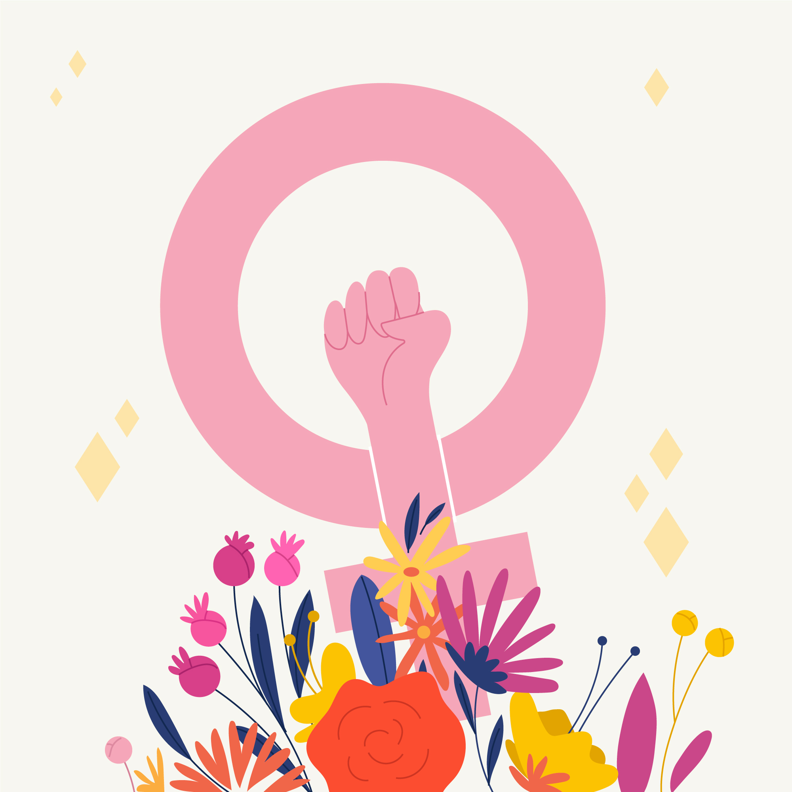

Our Vision
To create a society where women are enlightened, healthy, and empowered
— capable of making informed choices, leading independent lives, and
contributing meaningfully to nation-building.

-
Enlightenment for All-Advancing equal access to quality education
and literacy for girls and women
-
Women Enhealthment – Promoting physical and mental health through
awareness, accessibility, and preventive care.
-
Women Empowerment – Enabling economic independence through skills
development, employment support, and entrepreneurship.